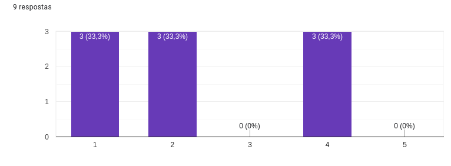
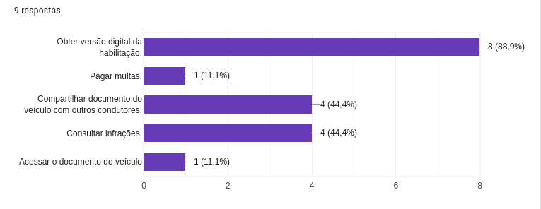
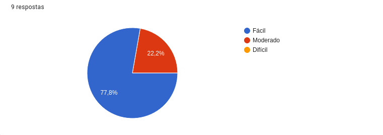

Questionário
Introdução
Esta página apresenta os resultados da análise dos dados coletados por meio de um questionário online. Antes de iniciar o questionário, os participantes foram expostos previamente a um termo de consentimento e o preencheram. Os questionários são instrumentos valiosos de pesquisa que possibilitam a coleta eficaz de dados quantitativos e qualitativos. São ferramentas flexíveis para explorar as opiniões, comportamentos e preferências de um determinado público-alvo, exigindo um entendimento claro dos objetivos da pesquisa para formular perguntas significativas.
Neste contexto, o questionário em análise foi desenvolvido para avaliar a satisfação dos usuários com o aplicativo governamental Carteira Digital de Trânsito. O foco principal é compreender a frequência e a forma de utilização do aplicativo, identificar as funcionalidades mais populares e aquelas que podem ser potencialmente acrescentadas para melhorar a experiência do usuário. Além disso, a pesquisa visa avaliar a facilidade de uso do aplicativo, uma métrica crucial para a aceitação de tecnologias digitais pelo público em geral.
Os questionários são particularmente úteis para obter informações diretas e mensuráveis sobre atitudes, opiniões e comportamentos dos usuários, permitindo uma análise sistemática e comparativa dos dados. A familiaridade e a facilidade de uso dos questionários online aumentam a probabilidade de engajamento e a qualidade das respostas. A natureza estruturada do questionário facilita a padronização das perguntas e respostas, garantindo a validade e confiabilidade dos resultados.
O uso do questionário permitiu abordar de forma concisa uma série de tópicos relevantes, incluindo a frequência de uso do aplicativo e as funcionalidades utilizadas. Isso proporcionou insights valiosos sobre o uso do aplicativo e como ele pode ser aprimorado para atender às necessidades dos usuários. Portanto, a escolha deste método de pesquisa está alinhada com os objetivos estabelecidos, garantindo que as informações coletadas sejam abrangentes e pertinentes para informar as decisões futuras de desenvolvimento e aprimoramento do aplicativo.
Objetivos
O objetivo do questionário foi de mensurar o grau de satisfação dos usuários com o aplicativo, quais são as funcionalidade mais utilizadas no mesmo, identificar possíveis funcionalidades que os usuários gostariam que fossem implementadas e a facilidade de uso do aplicativo pelos usuários.
Metodologia do Questionário
Distribuição e Contexto do Questionário
A disseminação do questionário foi realizada de maneira direcionada e intencional, utilizando plataformas de mensagens instantâneas onde se encontram os potenciais respondentes. Os canais escolhidos foram grupos específicos no WhatsApp e Telegram pertencentes à comunidade da Universidade de Brasília.
Público Alvo
- Seleção de Grupos Universitários: A utilização de grupos universitários foi deliberada, visando um público que, por sua natureza acadêmica, possivelmente apresenta uma maior propensão ao uso de tecnologias e aplicativos.
- Familiaridade com o Aplicativo: Considerando que os universitários representam uma demografia que tende a estar mais envolvida com dispositivos móveis e aplicativos, a probabilidade de que os participantes sejam usuários ativos do aplicativo em questão é alta.
Relevância da Amostra
- Representatividade dos Dados: A concentração de usuários ativos em grupos universitários pode proporcionar uma amostra com opiniões e experiências significativas, oferecendo uma visão mais fidedigna sobre a usabilidade e funcionalidade do aplicativo.
- Cautela na Generalização: Embora essa metodologia favoreça a obtenção de dados detalhados sobre o uso do aplicativo, é importante notar que a amostra pode não ser completamente representativa de todos os perfis de usuários, sendo um recorte específico de uma população maior.
Coleta de Dados
A coleta de dados foi realizada durante um período pré-determinado, com a distribuição do questionário ocorrendo de maneira eletrônica, permitindo assim uma coleta de informações rápida e eficiente.
- Período de Resposta: O intervalo de tempo em que o questionário esteve disponível para resposta foi cuidadosamente selecionado para maximizar a participação sem comprometer a qualidade dos dados coletados.
Perguntas Realizadas
A tabela 1 contém tudas as perguntas realizadas no questionário.
Tabela 1: questões do questionário
| Pergunta | Respostas |
|---|---|
| Você já utilizou o aplicativo governamental Carteira de Trânsito Digital? | 12 |
| Por que você não faz uso do aplicativo Carteira Digital de Trânsito? | 3 |
| Com que frequência você utiliza o aplicativa Carteira Digital de Trânsito? | 9 |
| Você acha que o aplicativo da Carteira Digital de Trânsito facilita o acesso a documentos e serviços relacionados ao trânsito? | 9 |
| Quais são as funcionalidades que você normalmente utiliza no aplicativo Carteira Digital de Trânsito? | 9 |
| Com que frequência você utiliza essas funcionalidades com sucesso? | 9 |
| Como você avaliaria a facilidade de uso do aplicativo? (Fácil, Moderado, Difícil) | 9 |
| Qual sua idade? | 12 |
| Você possui carteira de habilitação de trânsito? | 12 |
| Quantos veículos você costumar dirigir durante a semana? | 9 |
| Você é dono dos veículos que dirige? | 9 |
| Você já foi multado após cometer uma infração? Com que frequência? | 9 |
Fonte: Breno e Luis Eduardo.
Resultados Coletados
As figuras de 1 a 4 monstram os resultados das perguntas mais relevantes da pesquisa.
Questão 01
Com que frequência você utiliza o aplicativo Carteira Digital de Trânsito?
Figura 1: gráfico questão 1 
Fonte: Breno e Luis Eduardo.
Questão 02
Quais são as funcionalidades que você normalmente utiliza no aplicativo Carteira Digital de Trânsito
Figura 2: gráfico questão 2 
Fonte: Breno e Luis Eduardo.
Questão 03
Com que frequência você utiliza essas funcionalidades com sucesso?
Fonte: Breno e Luis Eduardo.
Questão 04
Como você avaliaria a facilidade de uso do aplicativo?
Figura 4: gráfico questão 4 
Fonte: Breno e Luis Eduardo.
Implicações e Aplicação dos Resultados
Aplicação dos Dados
Os resultados do questionário oferecem insights valiosos sobre o comportamento e as preferências dos usuários do aplicativo Carteira Digital de Trânsito. Estes dados serão utilizados para:
- Melhoria Contínua: Direcionar as atualizações do aplicativo, focando nas funcionalidades mais utilizadas e nos pontos de insatisfação dos usuários.
- Desenvolvimento de Funcionalidades: Identificar as necessidades não atendidas dos usuários, que podem ser convertidas em novas funcionalidades ou serviços.
Decisões Estratégicas
A análise das respostas do questionário informará decisões estratégicas importantes, tais como:
- Priorização de Recursos: Alocar recursos para as áreas do aplicativo que requerem mais atenção, seja em termos de usabilidade ou de conteúdo.
- Interface do Usuário: Implementar mudanças na interface do usuário baseadas nas preferências e dificuldades expressas pelos respondentes.
Engajamento do Usuário
Compreender melhor o engajamento do usuário é crucial para o sucesso do aplicativo. Os resultados do questionário ajudarão a:
- Medir Satisfação: Estabelecer métricas de satisfação do usuário e acompanhar a evolução ao longo do tempo.
- Campanhas de Conscientização: Criar campanhas de marketing e educacionais mais eficazes para informar os usuários sobre as funcionalidades e benefícios do aplicativo.
Conclusão
Devido ao pequeno tempo de circulamento do questionário não obtivemos muitas respostas.
Com a pequena amostra de dados que obtivemos, inferimos que o aplicativo possui uma boa usabilidade, as funções mais utilizadas são: obter versão digital da habilitação e consultar infrações. A proporsão de usuários que não vê utilidade no aplicativo é semelhante a proporsão de usuários que não possuem carteira de habilitação.
Bibliografia
VAZQUES, Carlos Eduardo, SIMÕES, Guilherme Siqueira, Engenharia de Requisitos, Editora: Brasport Livros e Multimídia Ltda
📑 Histórico de versões:
| Versão | Data | Descrição | Autor(es) | Revisor(es) |
|---|---|---|---|---|
1.0 |
30/09/23 | Criação do documento | Breno e Luis Eduardo | Limirio Guimarães |
1.1 |
30/09/23 | Criação do documento | Breno e Luis Eduardo | Limirio Guimarães |
1.2 |
21/11/23 | Correção Verificação Grupo 01: Melhoria na Introdução | Altino Arthur | Vinicius Mendes |
1.3 |
21/11/23 | Correção Verificação Grupo 01: Padronização das Legendas | Altino Arthur | Vinicius Mendes |
1.4 |
21/11/23 | Correção Verificação Grupo 01: Adição da Metodologia, Adição da Aplicação dos Resultados do Questionário | Altino Arthur | Vinicius Mendes |
1.5 |
21/11/23 | Correção Verificação Grupo 01: Adição do Termo de Consentimento | Altino Arthur | Vinicius Mendes |